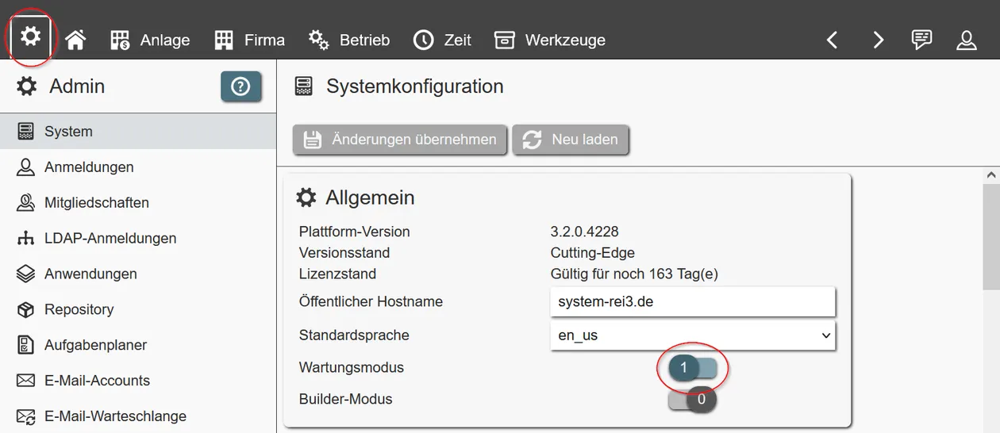
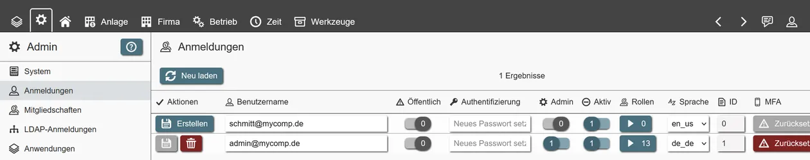
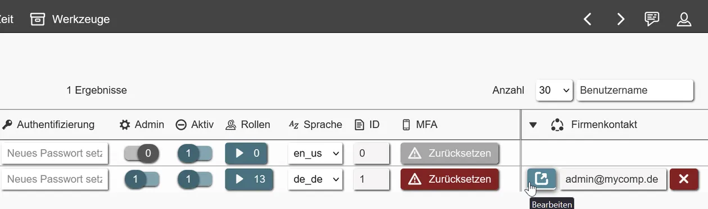
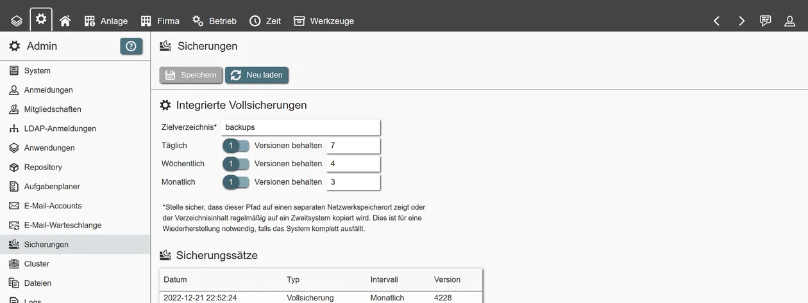

Aktualisiert 2023-06-18
Dies ist die Dokumentation zum Bereitstellen und Betreiben der REI3-Anwendungsplattform. Kenntnisse für die Zielinfrastruktur (Windows Server oder Linux) werden vorausgesetzt. Nach der Installation können Administratoren REI3-Anwendungen aus Online- oder lokalen Repositorys in Infrastrukturen mit oder ohne Internetzugang bereitstellen.
Je nach Einsatzgebiet stehen verschiedene Bereitstellungsmodelle zur Verfügung.
Dieses Modell wurde für kleine und mittlere Installationen (~250 Benutzer) entwickelt und ist verfügbar für Windows Server. Die eigenständige Bereitstellung weist fast keine externen Abhängigkeiten auf und inkludiert eine integrierte Datenbank. Es ist das empfohlene Modell für Unternehmen mit kleineren IT-Teams.
In diesem Modell wird REI3 getrennt von einem Datenbanksystem ausgeführt. Dies wird für große Instanzen empfohlen oder wenn eine Organisation ein Datenbankteam zur Verfügung hat. Diese Version kann auf Linux- und Windows-Servern bereitgestellt werden.
Eine Option für Entwicklungs-, Demo- und Testinstanzen. Mit der portablen Version kann REI3 ohne Setup auf Windows-Servern oder -Endgeräten gestartet werden. Wie das eigenständige Modell enthält auch die portable Version eine interne Datenbank. Es wird nicht empfohlen, produktive Anwendungen von einer portablen Instanz aus auszuführen.
Um REI3 ausführen zu können, müssen folgende Anforderungen erfüllt sein:
Für den Zugriff auf eine laufende REI3-Instanz kann jeder moderne Browser verwendet werden, wie bspw. Firefox, Chrome oder Safari. Dies schließt mobile Browser ein. REI3 verwendet moderne Webstandards; "Internet Explorer" wird nicht unterstützt.
REI3 wird mit einem grafischen Installationsprogramm für Windows Server geliefert. Das Installationsprogramm unterstützt sowohl eigenständige als auch dedizierte Bereitstellungsmodelle.
config.json eingetragen werden. Die Datei config.json befindet sich im ausgewählten Anwendungsverzeichnis. Der Datenbankbenutzer muss volle Berechtigungen für die gewählte Datenbank haben.Unabhängig vom Bereitstellungsmodell, wird REI3 unter Windows Server als Windows-Dienst behandelt und kann über den Service-Manager gestartet werden (Befehl: services.msc). Falls der Dienst nicht starten kann, schreibt REI3 in das Windows-Applikationslog.
Aus lizenzrechtlichen Gründen können wir Ghostscript nicht zusammen mit REI3 ausliefern. Wenn Sie PDF-Thumbnails erstellen möchten, müssen Sie eine aktuelle Version von Ghostscript herunterladen und auf dem REI3-Server installieren.
Für Linux-Server ist REI3 als komprimiertes Archiv mit vorkompilierten Binärdateien verfügbar. Die Installationsschritte sind:
/opt/rei3/ zum Beispiel).r3 ausführbar (chmod u+x r3).config_template.json zu config.json - die Datei muss im gleichen Verzeichnis sein wie die ausführbare Datei r3.config.json Verbindungsdetails zu einer leeren, UTF8-enkodierten PostgreSQL-Datenbank hinzu. Der Datenbankbenutzer muss volle Berechtigungen für die gewählte Datenbank haben.sudo apt install imagemagick ghostscript).sudo apt install postgresql-client).sudo ./r3 -install).systemctl start rei3 zum Beispiel).Sollte der Dienst nicht starten, schreibt REI3 ins syslog.
Während der Ausführung ist REI3 standardmäßig über Port 443 erreichbar. Sie können jeden modernen Browser verwenden, um lokal auf REI3 unter https://localhost/ oder über das Netzwerk mit einer entsprechend konfigurierten Firewall zuzugreifen. Während der Installation wird ein einzelner Administratorbenutzer erstellt. Benutzername und Passwort sind jeweils auf "admin" gesetzt.
Nach der Anmeldung kann auf die Adminoberfläche zugegriffen werden, um Benutzer zu verwalten, Anwendungen zu installieren, auf Systemprotokolle zuzugreifen usw. Das Standardkennwort sollte sofort nach der ersten Anmeldung geändert werden.
Die Kernkonfiguration von REI3 kann in der Konfigurationsdatei (config.json) geändert werden, die sich im ausgewählten REI3-Installationsverzeichnis befindet. Das Festlegen von Dateipfaden, Webserver-Port und Datenbankverbindungsdetails ist unkompliziert. Änderungen werden beim Neustart des Anwendungsdienstes angewendet.
Während der Installation erstellt REI3 ein selbstsigniertes Zertifikat, um den verschlüsselten Zugriff auf die Anwendung zu ermöglichen. Es wird nicht empfohlen, dieses Zertifikat dauerhaft zu nutzen. Wenn möglich, sollte für REI3 ein ordnungsgemäß signiertes Zertifikat bereitgestellt werden, um eine sichere Kommunikation mit Vertrauen zwischen Endgeräten und Server zu gewährleisten.
Einige allgemeine Überlegungen / Fallstricke:
syslog für Linux, sonst Windows-Applikationslog).Wenn Clients mit einem REI3-Server kommunizieren, verwenden sie zwei Methoden - beide laufen über den gleichen Port (normalerweise 443) als TCP:
Bei Proxy-Servern (egal ob Forward- oder Reverse-Proxy) können HTTP(s)-Anfragen wie jede andere Webanwendung behandelt werden. Daher sind Good-Practices wie Anfrage-Timeouts sinnvoll.
Websockets hingegen sollen so lange aktiv bleiben, bis eine der beiden Seiten (Server oder Client) die Verbindung absichtlich schließt. Dies kann aufgrund von Ereignissen wie einem Logout oder einem Server, der in den Wartungsmodus geht, geschehen. Bei der Konfiguration eines Proxys sollte das Anfrage-Timeout für Websocket-Verbindungen deaktiviert oder zumindest auf mehrere Stunden eingestellt werden. Einige Proxys (wie HAProxy) nennen diese Verbindungen "Tunnel" statt "Client" oder "Server". Jedes Mal, wenn eine Websocket-Verbindung von einem Proxy zwangsweise geschlossen wird, muss der Client die Verbindung neu aufbauen und es können ungespeicherte Änderungen verloren gehen.
Im Falle von Cluster-Setups muss eine Websocket-Verbindung bei einem bestimmten Server 'hängen bleiben', bis sie geschlossen wird. Auch wenn die ersten Anfragen z.B. über Round-Robin zugewiesen werden, ist ein bestimmter Server für die laufende Websocket-Kommunikation mit einem bestimmten Client zuständig. HTTP(S)-Anfragen können jedoch jederzeit von einem beliebigen Cluster-Server bearbeitet werden.
Nach der Konfiguration werden grundsätzlich alle administrativen Aufgaben über die Adminoberfläche in der REI3-Hauptwebanwendung ausgeführt. Jeder Benutzer, der als "Administrator" definiert ist, hat vollen Zugriff auf diese Funktionen.
Um tiefgreifende Systemänderungen sicher auszuführen, steht ein separater Betriebsmodus zur Verfügung, der als "Wartungsmodus" bezeichnet wird. Wenn dieser aktiviert ist, werden alle Benutzer, die keine Administratoren sind, vom System abgemeldet. Neue Anmeldungen von Nicht-Administratoren werden abgelehnt.

Im Wartungsmodus können Anwendungen installiert, konfiguriert und gelöscht werden. Bitte beachten Sie, dass durch das Löschen von Anwendungen alle entsprechenden Daten dauerhaft aus dem System gelöscht werden. Dies ist ohne aktuelle, funktionale Backups nicht rückgängig zu machen.
Wenn das System im Wartungsmodus ist, kann zusätzlich der Builder-Modus aktiviert werden. Dies ermöglicht Adminbenutzern Zugriff auf das integrierte, grafische Anwendungsentwicklungswerkzeug, kurz 'Builder' genannt.
Der Builder ist ein umfangreiches Werkzeug. Alle REI3-Anwendungen werden ausschließlich über den Builder erstellt und geändert. Bitte beachten Sie, dass das Ändern von Anwendungen dauerhafte Konsequenzen bis hin zum Datenverlust hat. Versuchen Sie nicht, den Builder in einer produktiven Instanz zu verwenden. Zum Testen oder Entwickeln von Anwendungen sollte eine separate Instanz verwendet werden. Die portable Version macht dies für Windows-Endgeräte einfach. Unter Linux dient ein separater Anwendungsdienst, der auf eine separate Datenbank zugreift, demselben Zweck.
Um Benutzern den Zugang zum System zu ermöglichen, müssen individuelle Anmeldungen von einem REI3-Administrator erstellt oder von einem Verzeichnisdienst importiert werden. Anmeldenamen können alles sein, von Namen über Mitarbeiter-IDs bis hin zu E-Mail-Adressen - sie müssen nur innerhalb einer REI3-Instanz eindeutig sein.

Um auf eine Anwendung oder Daten zugreifen zu können, müssen den Anmeldungen Rollen zugewiesen werden. Dies kann durch einen REI3-Administrator manuell geschehen oder sie können automatisch anhand von Gruppenmitgliedschaften innerhalb eines Verzeichnisdienstes zugewiesen werden. Rollenberechtigungen sind kumulativ - je mehr Rollen ein Benutzer hat, desto umfangreicher ist der Zugriff.
Um die Kontosicherheit zu erhöhen, können REI3-Administratoren in der Admin-Oberfläche Optionen für die Passwortkomplexität auswählen. Darüber hinaus steht den Benutzern MFA (Multi-Faktor-Authentifizierung) in Form von TOTP (zeitbasierte Einmal-Passwörter) zur Verfügung, die von den Administratoren zurückgesetzt werden können. MFA kann auf mehreren Geräten eingerichtet werden und wird von den meisten Authenticator-Apps unterstützt (alles, was TOTP unterstützt).
REI3 hostet ein internes Authentifizierungs-Backend. Zur Integration in vorhandene Infrastrukturen kann REI3 LDAP-Dienste nutzen, um folgendes anzubieten:
Um Workflows und andere Funktionen mit Bezug zum aktuellen Benutzer zu ermöglichen, können Anmeldungen mit Datensätzen verbunden werden. Ein Beispiel ist die Anwendung "Organisationen", die Anmeldungen mit Unternehmenskontakten verbindet. Mit dieser Verbindung können Anwendungen die Organisationsdetails des entsprechenden Firmenkontakts nutzen, um Kontaktinformationen abzurufen, Arbeit zuzuweisen, Zeit zu erfassen, Projekte zu verwalten usw.

Die Anzahl der Anwendungen oder Datensätze, die mit einer Anmeldung verbunden werden können, ist nicht begrenzt. Anmeldungen können auch mit anderen Entitäten wie Kunden, Anfragern usw. verbunden werden.
Wenn mindestens eine Anwendung installiert ist, welche eine Verknüpfung von Datensätzen mit Anmeldungen ermöglicht, können REI3-Administratoren in der Verwaltungsoberfläche für Anmeldungen neue Datensätze erstellen oder bestehende zuweisen.
Um REI3 nutzen zu können, müssen Anwendungen installiert werden. Um Anwendungen zu verwalten, muss zuerst der Wartungsmodus aktiviert werden.
Anwendungen werden über die Adminoberfläche installiert. Sie können aus mehreren Quellen abgerufen werden:
Unternehmen, die mit REI3 beginnen, sollten mit dem offiziellen Repository starten und zu lokalen Repositorys wechseln, wenn sie skalieren oder selbst entwickelte Anwendungen im Fokus stehen.
Um eine REI3-Instanz vollständig wiederherzustellen, müssen diese Komponenten gesichert werden:
config.json)config.json)
certificates (verwendete SSL-Zertifikate)files (hochgeladene Dateien)transfer (installierte Anwendungen)Die integrierte Backup-Funktion sichert automatisch alle erforderlichen Daten, wenn sie in der Admin-Oberfläche aktiviert ist und Abhängigkeiten installiert sind.

Bei größeren Systemen reicht die integrierte Backup-Funktion möglicherweise nicht aus; sie kann nur Vollsicherungen erstellen, die zwar sehr sicher sind, aber mehr Zeit und Speicherplatz benötigen als andere Sicherungsmethoden. Bei wachsenden Datenbeständen sollten Sie auch inkrementelle/differenzielle Sicherungen in Betracht ziehen; diese erfordern mehr Aufwand und möglicherweise Infrastruktur und sind nicht Teil dieser Dokumentation.
In jedem Bereitstellungsmodell wird eine PostgreSQL-Datenbank für REI3 verwendet. Um auf die eigenständige, integrierte Datenbank zuzugreifen, verwenden Sie die Verbindungsdetails aus der REI3-Konfigurationsdatei (config.json), während der REI3-Dienst ausgeführt wird. Die Datenbank heißt standardmäßig "app".
Für vollständige Sicherungen empfehlen wir die Verwendung interner PostgreSQL-Werkzeuge wie pg_dump zum Sichern und pg_restore zum Wiederherstellen der Datenbank. Beispiele:
Empfehlungen:
Es gibt zwei Arten von Aktualisierungen: Anwendung- und Plattformaktualisierung. Anwendungsaktualisierungen sind häufiger und dienen dazu, die Funktionalität für REI3-Anwendungen zu erweitern. Diese können direkt von der Adminoberfläche installiert werden, wenn der Wartungsmodus aktiv ist. Wenn die Aktualisierungen über das Repository empfangen werden, handelt es sich um einen Ein-Klick-Vorgang. Manuelle Aktualisierungen müssen über gepackte Anwendungsdateien bereitgestellt werden. Es wird empfohlen, Aktualisierungen zuerst in Testumgebungen zu installieren, da sich Aussehen und Verhalten zwischen Anwendungsversionen ändern können.
Plattformaktualisierungen richten sich an die zugrunde liegende Plattform-Software und sind möglicherweise auch für Anwendungsaktualisierungen erforderlich, wenn für diese neuere Plattformfunktionen erforderlich sind. Da Sicherheits- und Stabilitätsprobleme mit Plattformaktualisierungen behoben werden, ist es immer gut, die Plattform selbst zu aktualisieren.
Wenn das grafische Installationsprogramm für Windows verwendet wird, kann durch Ausführen einer neueren Version die Aktualisierung gestartet werden. Der Plattformdienst wird automatisch neu gestartet.
Bei Linux-Servern ist es erforderlich, den Dienst zu stoppen und Dateien im ausgewählten Anwendungsverzeichnis mit dem neuesten extrahierbaren Paket zu überschreiben. Danach kann der Dienst neu gestartet werden.
Um die portable Version zu aktualisieren, stoppen Sie alle laufenden REI3-Instanzen und extrahieren Sie den Inhalt einer neueren, portablen Version in das Anwendungsverzeichnis.
REI3-Server können in Clustern betrieben werden, um mehr Anfragen und Benutzer gleichzeitig zu verarbeiten. Bevor Sie ein Clusterbetrieb in Erwägung ziehen, ist es wichtig zu wissen, woher wahrgenommene Leistungsprobleme kommen. REI3 ist für die gleichzeitige Bearbeitung vieler Benutzer ausgelegt und kann auch mehrere Prozessorkerne sowie mehr Arbeitsspeicher nutzen, um die Leistung zu verbessern. Nur wenn die CPU-Last/Speichernutzung des REI3-Dienstes häufig sehr hoch ist, kann der Clusterbetrieb mehrerer REI3-Server sinnvoll sein.
In den meisten Fällen sind die Leistungsprobleme auf andere Ursachen zurückzuführen:
Ist der REI3-Dienst tatsächlich der Engpass, kann ein Clusterbetrieb helfen - hierfür müssen folgende Voraussetzungen erfüllt sein:
Die Einrichtung des Clusters selbst ist sehr einfach:
config.json.
cluster/nodeId muss für neue Serverknoten leer gelassen werden.Dies ist die gesamte Einrichtung. Das Cluster konfiguriert sich automatisch und weist auch automatisch die Rolle des Clustermasters und die Aufgaben zu, je nachdem, welche Knoten einchecken.
REI3 kann im Internet zugänglich gemacht werden, indem entsprechende Firewall-Ports geöffnet werden. Wir, die REI3-Hersteller, sind bestrebt, die Plattform so sicher wie möglich zu gestalten. Wie bei jeder anderen Anwendung ist es immer möglich, dass unentdeckte Sicherheitslücken ausgenutzt und unbefugter Zugriff erreicht wird. Neben der regelmäßigen Aktualisierung von REI3 selbst sind wir der Ansicht, dass zusätzliche Sicherheitsmaßnahmen erforderlich sind, um Webanwendungen in der Cloud sicher auszuführen. Diese sind u. A.:
Die REI3-Plattform enthält einen Bruteforce-Schutz. Dies reicht bei Weitem nicht alleine für einen sicheren Betrieb mit Cloud-Verbindung. In jedem Fall sollten zusätzliche Maßnahmen (wie oben beschrieben) angewendet werden.